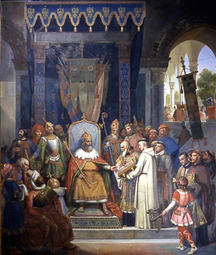
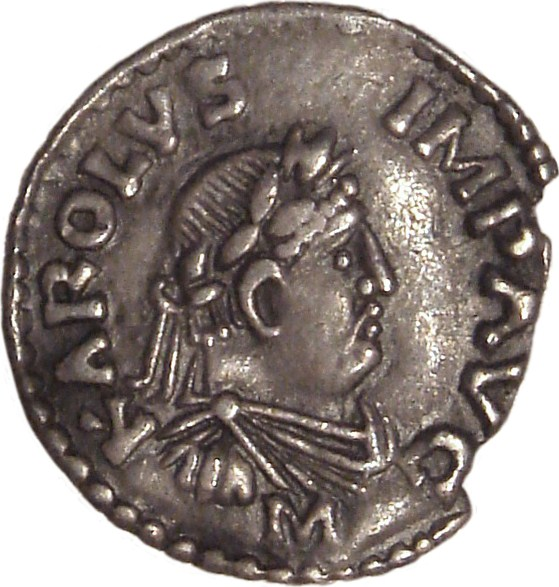
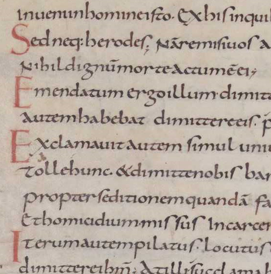
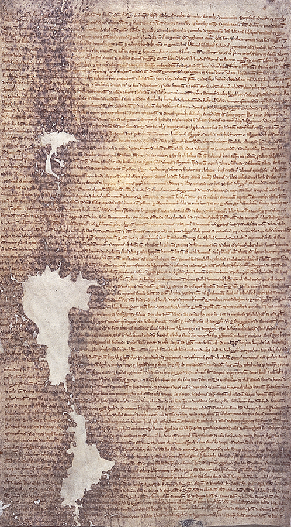
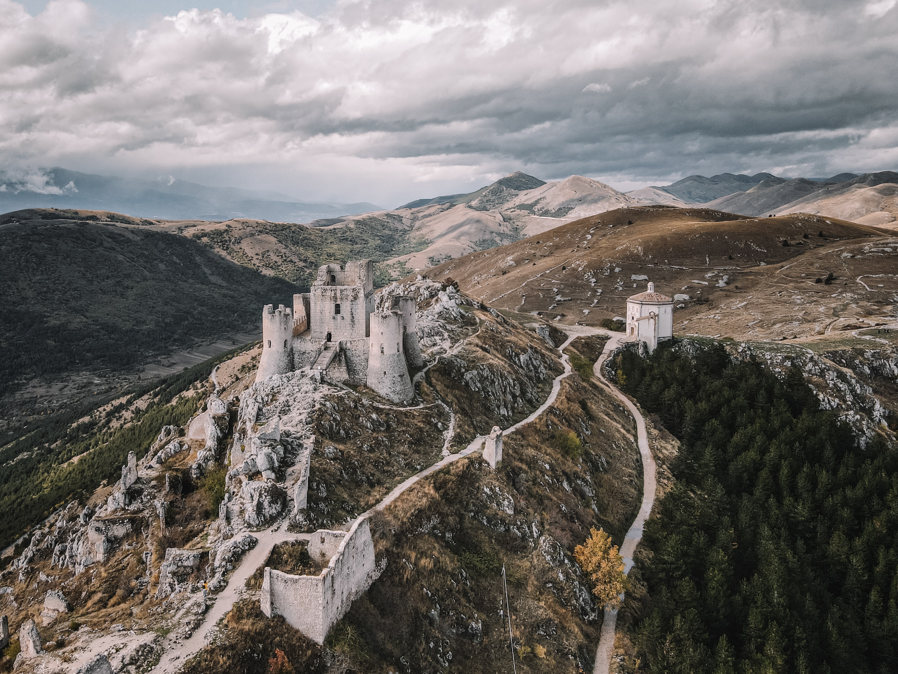
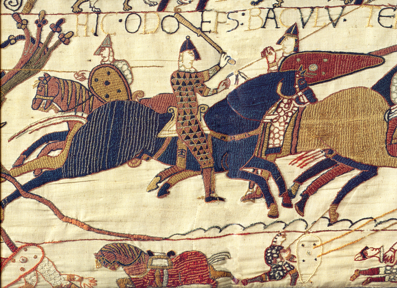

A sword in 'Medieval style'
You may have heard of the term 'Dark Ages'. It can refer to the European Early Middle Ages or the Middle Ages in general.
The word 'dark' suggests that progress stagnated and had even fallen back after the Roman Empire collapsed in 395 C.E...

Charles 'The Great', emperor of Charlemagne (724-814).
... But how stagnant were the Middle Ages really? Let us go over some examples of skill & technological advancement in the times of the 'Dark Ages'.

A coin from the empire of Charlemagne
Charlemagne expanded his European empire quite rapidly.
For a moment it even seemed like his empire would be able to surpass Rome's in terms of grip on the European continent.
As we shall learn in the next slide, Charlemagne implemented quite solid rules, standards, and reforms throughout his territories.
The coin from the image above reminds us of Charlemagne's rather strong centralization.

The Carolingian miniscule script
During Charlemagne's reign, he carried out a large numbers of reforms.
They included centralizing, educational and 'standardizing' reforms.
These forms of progress proved to be quite functional in the future to.
A prime example is Charlemagne's introduction of a an improved script, known as the Carolingian miniscule.
It built upon the Roman script and added elements like cases, better spacing and punctuations.
It proved to be a solid foundation for book printing in later Medieval times.

Magna Carta (written in 1215 - this version is from 1225)
One of the most iconic items from the Middle Ages is the Magna Carta.
The Magna Carta precursed the constitutions written at times of the Dutch Revolution, French Revolution and the Revolution in the United States.
It truly is a monumental piece of history that suggests time did not stand still in the 'Dark Ages' (Middle Ages).

Rocca Calascio (made in the 10th century)
In terms of architectural prowess, one could argue that the Medieval Europeans did not stand still either:
As we learn in 'Slovakian' Castles, some of their structures were impressive and solidly made.

Tapestry of Bayeux (made in the late 1070s)
We have discussed the Middle Ages' skill in terms of military, cultural and governmental terms.
Of course, the Middle Ages might have been rather harsh on groups of people, at certain times (like daily life or historic events such as the Rindfleisch masacres and the Bubonic plague).
But still, to name the Middle Ages 'Dark Ages' must undoubtedly be nuanced and debunked.
This slideshow has sought to give some illustrations to show if there was indeed a darkness, there certainly was some 'light'.
What rests in this last slide, is the Medieval tradition of art.
There are many beautiful works (mostly of Christian nature) that stem from this time.
But let me quasi-nonchalantly introduce an artwork I personally enjoy: the tapestry of Bayeux.
It's a piece that recounts the Norman conquest of England in the 11th century.
(End of Gallery)